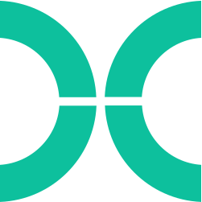

Resumé
You can download my current resumé here.
Software Projects
Algorithmic Prediction of Antibody Cross-Reactivity at the Proteome Scale
The FVC algorithm predicts sites of antibody cross-reactivity between proteins at the proteome scale. Adapted from
Energetics of protein–protein binding necessarily include contributions both from conformational equilibria and from interfacial interactions. In the particular case of an antibody binding to a protein epitope, the conformational contribution is typically neglected as the antibody-bound and free forms of the protein are usually highly similar, leading to the reasonable conclusion that binding affinity in most cases can be reconciled in the context of observed interfacial interactions. However, the phenomenon of molecular mimicry has also been widely observed, wherein antibodies raised against one sequence/structure are able to recognize a completely different sequence/structure. This observation suggests that, in some cases, the conformational contribution could play a significant role in facilitating this cross-reactivity.
To investigate potential mechanisms, a sequence-based algorithm was developed to probe for the relationship between conformational similarity and cross-reacting epitopes, and it was discovered that 9 of 11 medically relevant cross-reactive epitopes taken from the literature exhibited higher-than-expected local similarity values. Check out the GitHub page for access to the algorithm and analysis pipeline.
Relevant publications
For a full list of publications, please see my resumé below.
High Throughput Analysis Pipeline for Crosslinking Mass Spectrometry
Crosslinking mass spectrometry allows for the detection of interactions between proteins across an entire proteome. However, the resulting rich datasets pose a unique analytical challenge, requiring large amounts of computational resources and substantive time investment to investigate. As the field has developed, many approaches have emerged, though none has emerged as a leading standard.
To enable standardized, scalable analysis, I am developing a Nextflow based pipeline and applying it to the majority of existing crosslinking mass spectrometry datasets on PRIDE, employing state of the art search algorithms and False Discovery correction techniques. Check out the GitHub page for access to the analysis pipeline.
Independent Software Development Contractor - KRW International
I work as an independent software development contracter for KRW international, developing data driven analysis and processing pipelines to enable senior leadership coaching and organizational insights.
basicParallelize - A User Friendly Multiprocessing Solution
basicParallelize is a drop in solution for parallelism in Python, designed to make speeding up workflows as easy as converting a for loop to a function call. Check it out on GitHub or the Python Package Index.
Directory Explorer - A drop-in replacement for CD.
Directory Explorer is a replacement for CD that adds flow-enhancing utilities such as automatic file listing, fuzzy finding, and stack based directory jumps. You can find it on GitHub.
NeoVipe - A modern rework of vipe, turning $EDITOR into a pipe friendly tool.
NeoVipe turns any text editor into a pipe friendly tool, allowing direct integration of typical text editing workflows into data processing and streamlining use of command line tools in text processing. It is publicly available on GitHub.
Skills



Education
Ph. D. Research Johns Hopkins University (Fall 2024 - Current)
I am currently pursuing doctoral research in computational biology in the Fried Lab where I develop and employ high throughput software solutions for the analysis and study of protein structure.
B.S. Intensive in Molecular, Cellular and Developmental Biology Yale University - Honors in the Major (2023)
I completed my undergraduate studies at Yale University in 2023, studying techniques for single nucleotide resolution mapping of RNA modifications in the Nachtergaele Lab.
About Me
I am currently a graduate researcher in the Cell, Molecular, Developmental Biology and Biophysics (CMDB) program at Johns Hopkins University. I live in Baltimore, where outside of work I enjoy spending time baking, cooking, enjoying nice espresso, and playing Dungeons and Dragons with friends.